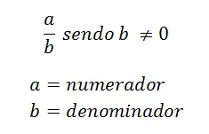

Números fracionários
Números racionais
Os números racionais são os números que podem ser escritos na forma de fração. Esses números podem também ter representação decimal finita ou decimal infinita e periódica.
Notação
Leitura e classificação
- Para fazermos as leituras de uma fração devemos observar o seu denominador, pois a partir dele as suas nomenclaturas são diferenciadas.
- Quando o denominador for qualquer outro número que não está representado acima devemos acrescentar a palavra avos na sua leitura.
Fração própria
numerador < denominador
Fração imprópria
numerador > denominador
Operação com frações
Soma e subtração de fração
- 1 situação: Se as frações possuem o mesmo denominador, soma-se os numeradores (termos de cima) e conserva-se os denominadores (termos de baixo).
- 2 situação: Somar frações com denominadores diferentes necessita saber calcular o MMC (mínimo múltiplo comum) entre dois números. Depois dividimos pelos denominadores e multiplicamos de numeradores.
Multiplicação e divisão
- 1 situação: Se as frações possuem o mesmo denominador, soma-se os numeradores (termos de cima) e conserva-se os denominadores (termos de baixo).
- 2 situação: Somar frações com denominadores diferentes necessita saber calcular o MMC (mínimo múltiplo comum) entre dois números. Depois dividimos pelos denominadores e multiplicamos de numeradores.
Números Decimais
Os números decimais são números racionais (Q) não inteiros expressos por vírgulas e que possuem casas decimais, por exemplo: 1,54; 4,6; 8,9, etc. Eles podem ser positivos ou negativos.
Leitura de Números Decimais
Operações com Números Decimais
Soma e subtração de números decimais
- 1 situação:Para realizar as operações dos números decimais, devemos alinhar os números segundo a vírgula e as casas decimais que possuem.
Multiplicação
- 2 situação: Multiplicamos como números naturais sem vírgula. Terminada a multiplicação, conte o número de casas depois das vírgulas. No resultado da multiplicação, posicione a vírgula decimal contando, da direita para a esquerda, o número de casas contado no item anterior.
Divisão
Quando o dividendo ou o divisor é um número decimal, é preciso igualar o número de casas decimais entre eles e depois dividimos como números naturais (sem vírgula).